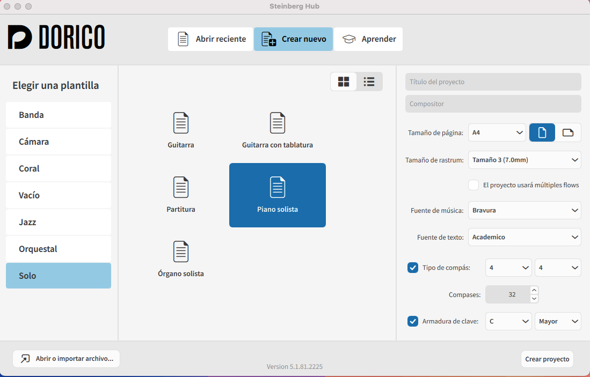
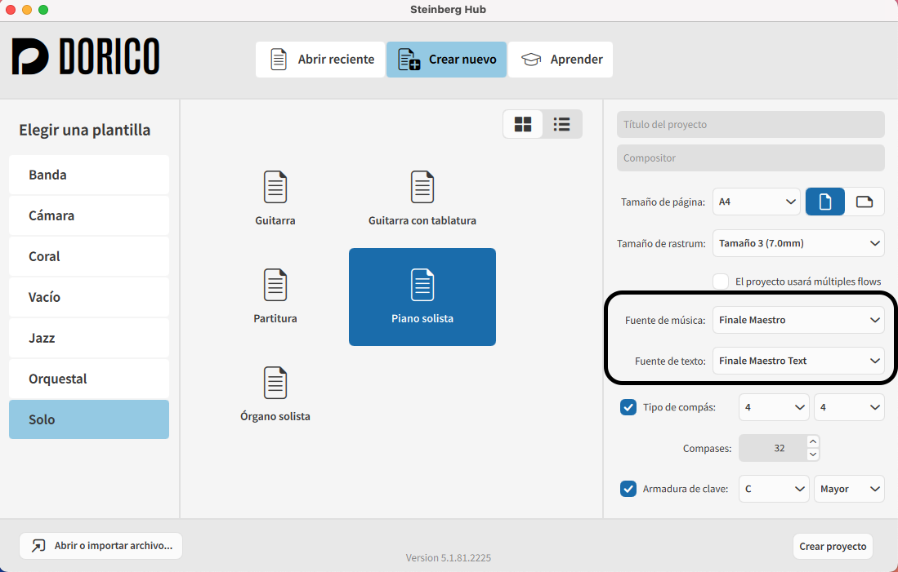
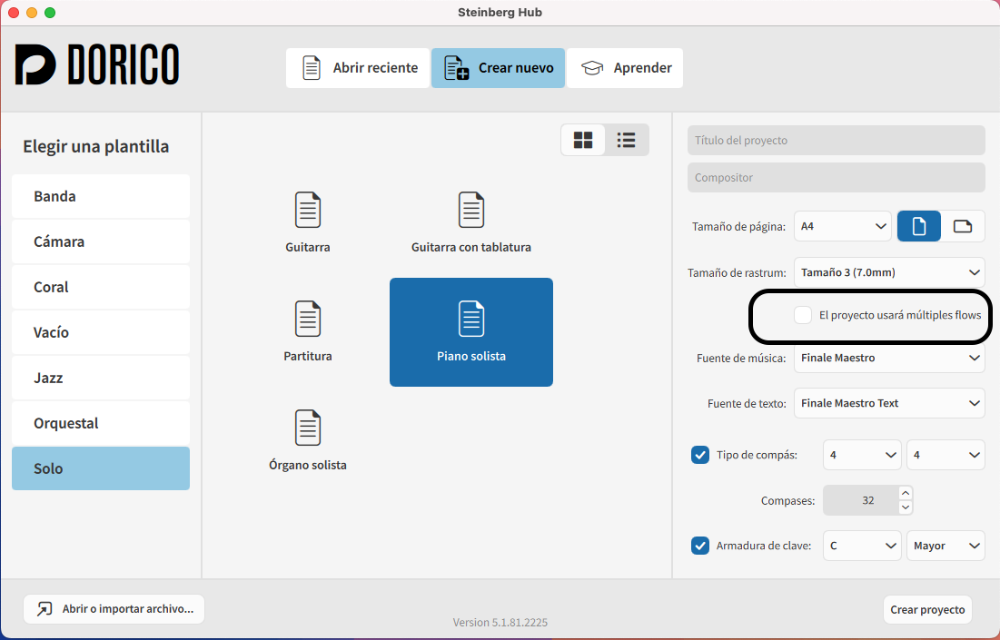
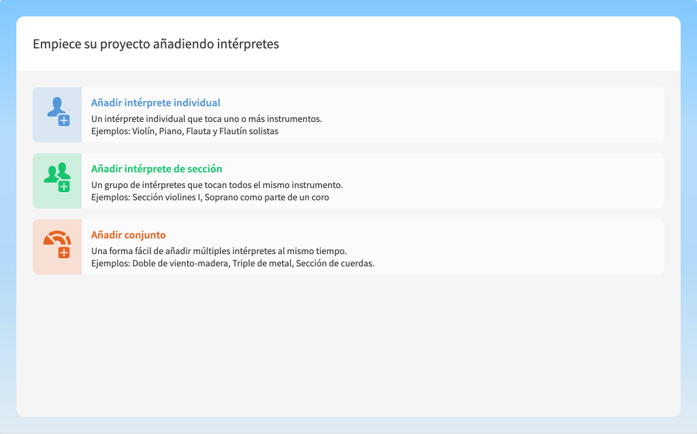
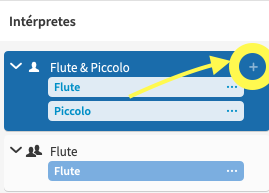
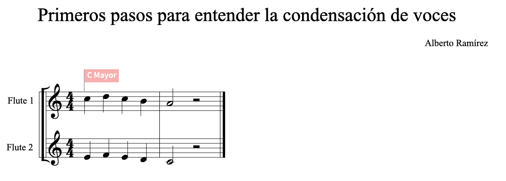
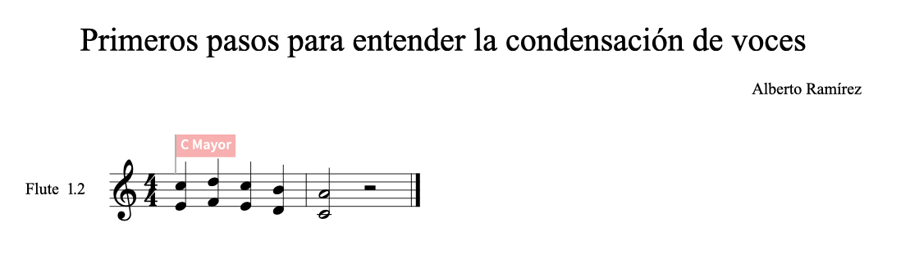
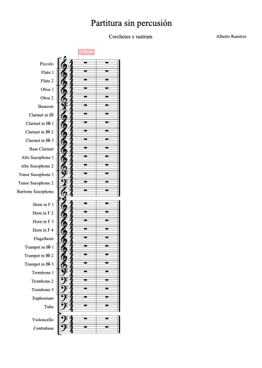
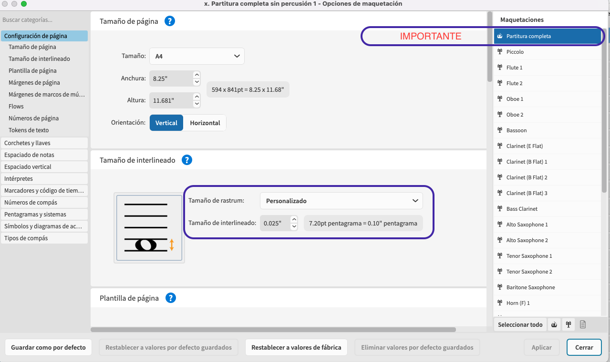
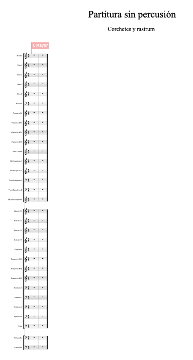

Fuentes de Notacón (engrave) y Texto
Configuración por defecto en Dorico para la creación de una nueva partitura.

Para los amantes de Finale: Debemos cambiar la fuente de música Bravura por Finale Maestro y Fuente de texto Académico por Finale Maestro Font

Flows (Score Merge en Finale)
La opción "El proyecto usará múltiples flows" permite crear diferentes movimientos para una misma obra. También es muy válido para la creación de ejercicios de una misma materia.

Empiece su proyecto añadiendo intérpretes
En primer lugar debemos decidir si los instrumentistas son instrumentistas a1, a2 o a3 como en las secciones de viento de la orquesta o si bien son secciones de un instrumento, al igual que las cuerdas en la orquesta.

La mayor diferencia radica en la posibilidad de cambiar de instrumento en la parte individual. De este modo, podemos tener preparado un segundo instrumento para el intérprete.

De esta forma tendremos en "Vista Galera" ambos instrumentos, y en la partitura general únicamente visualizaremos el instrumento que está sonando. O suena uno u otro. Si dejamos los dos, podemos observar como un instrumento podría mutar a un instrumento diferente y dejar el segundo como una familia completa. Por ejemplo Saxofones con un intérprete soprano.
Ejemplo archivo Dorico: 1. Empiece su proyecto añadiendo intérpretes
En este ejemplo podemos ver la posibilidad de cambio de instrumento dentro de un intérprete.
Plantilla Banda/Orquesta
A continuación vamos a crear una plantilla completa para banda u orquesta.
Es muy importante tener en cuenta que, a diferencia de otros programas de edición de partituras como Finale, para la creación de distintas voces dentro de un pentagrama, añadiremos tantos pentagramas como voces vamos a necesitar. La capa 1 y capa 2 en otros editores aquí se escriben y extraen partes de forma separada. El proceso de unificar ambas voces en un sistema se realizará por medio de la condensación de partitura.

Ejemplo archivo Dorico: Condensación de voces Parte 1
Cuando añadimos todos los instrumentos de nuestra plantilla, nos encontramos con nuestro primer problema: La página no se ajusta de forma automática.
Si nos hemos familiarizado con el tamaño de pentagrama óptimo para nuestras plantillas, podemos asignar el tamaño de rastrum (rastrillo) de forma anticipada desde la primera ventana del Steinberg Hub.
